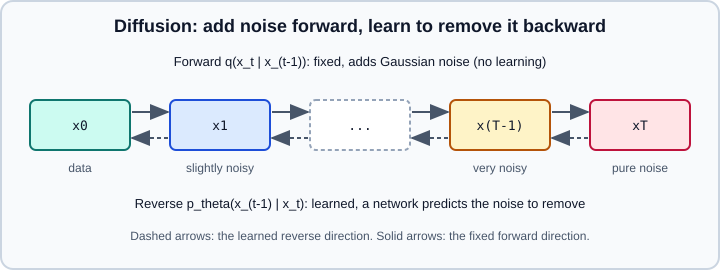

Generative Models: Autoencoders, VAEs, GANs & Diffusion
|
This content was generated with the assistance of AI and should be verified against the official documentation before being relied on in production. |
A discriminative model learns \(p(y \mid x)\): given an input, what is the label? A generative model learns something about \(p(x)\) itself, so that it can produce new samples that look like the training data, score how likely a sample is, or compress it into a useful representation. This page covers the four families that dominate deep generative modelling for images and other continuous data: autoencoders, variational autoencoders (VAEs), generative adversarial networks (GANs) and diffusion models. Large language models are also generative; they are autoregressive models over tokens and are covered in What is an LLM and Transformer Architecture.
The code targets Python 3.13 and PyTorch 2.15 (with the Diffusers library for the pre-trained pipeline example). The PyTorch examples were run on Python 3.13 with PyTorch 2.15 (CPU) on 2026-11-01. The page assumes the vocabulary of Neural Network Fundamentals, Information Theory & Losses and Convolutional Neural Networks. Representations that autoencoders produce are discussed further in Embeddings & Representation Learning.
The generative landscape
All the families answer the same question, how do we model a complicated distribution over high-dimensional data, with different trade-offs.
| Family | How it models the data | Strengths | Weaknesses |
|---|---|---|---|
Autoencoder |
Compresses \(x\) to a code \(z\) and reconstructs it. Not a probabilistic model of \(p(x)\) on its own. |
Simple, stable training; useful for compression, denoising, anomaly detection, pre-training. |
Cannot sample new data meaningfully: the code space has gaps and no prior. |
VAE |
Latent-variable model \(p(x) = \int p(x \mid z)\,p(z)\,dz\) trained by maximising a lower bound (the ELBO). |
Stable training, an explicit latent space with a prior, fast one-pass sampling, a likelihood bound. |
Samples are often blurry with a plain Gaussian decoder; the posterior can collapse. |
GAN |
A generator and a discriminator play a minimax game; no explicit likelihood. |
Sharp samples, very fast one-pass sampling. |
Unstable training, mode collapse, no likelihood, hard to evaluate. |
Diffusion |
Learns to reverse a fixed process that gradually adds noise. |
State-of-the-art sample quality and diversity, stable training, controllable by conditioning and guidance. |
Sampling needs many network evaluations (tens to hundreds), high compute. |
Autoregressive (tokens) |
Factorises \(p(x)\) as a product of next-token conditionals. |
Exact likelihood, very scalable; the basis of LLMs. |
Sequential sampling; for images it needs tokenisation. |
Two other families are worth knowing by name: normalising flows (invertible networks with an exact likelihood) and energy-based models. Diffusion models and flow-matching models are closely related, and many recent image and video systems use flow-matching objectives with a transformer backbone instead of a U-Net. The principles below carry over.
Autoencoders
An autoencoder is two networks trained together. The encoder \(f_\phi\) maps an input \(x\) to a code \(z = f_\phi(x)\); the decoder \(g_\theta\) maps the code back to a reconstruction \(\hat{x} = g_\theta(z)\). The loss is the reconstruction error, for example the mean squared error for real-valued inputs or the binary cross-entropy for pixels scaled to \([0, 1]\). No labels are needed, so it is a form of self-supervised learning (see Types of Learning).
The point is not to copy the input but to learn a useful code, so the model must be prevented from learning the identity function. The common ways are:
-
Undercomplete: the code has fewer dimensions than the input, a bottleneck. A linear autoencoder with squared error learns the same subspace as principal component analysis; nonlinear layers learn a curved manifold.
-
Regularised or sparse: the code can be wide but a penalty (L1 on activations, or a KL sparsity term) keeps most units inactive.
-
Denoising: the input is corrupted (Gaussian noise, masking, dropout) and the target is the clean input. The model must learn the structure of the data to repair it. This is the ancestor of both diffusion models and masked pre-training.
-
Contractive: a penalty on the Jacobian of the encoder makes the code insensitive to small input changes.
-
Convolutional: for images the encoder is a stack of strided convolutions and the decoder uses transposed convolutions or upsampling followed by convolutions. Prefer
nn.Upsamplefollowed by aConv2dwhen checkerboard artefacts appear withConvTranspose2d.
Typical uses are dimensionality reduction and visualisation, denoising, anomaly detection (a high reconstruction error flags samples unlike the training data), pre-training on unlabelled data, and learned compression. The example trains a small convolutional denoising autoencoder on MNIST.
import torch
from torch import nn
from torch.utils.data import DataLoader
from torchvision import datasets, transforms
device = torch.accelerator.current_accelerator() or torch.device("cpu")
train_ds = datasets.MNIST(
"data", train=True, download=True, transform=transforms.ToTensor()
)
train_dl = DataLoader(train_ds, batch_size=128, shuffle=True)
class DenoisingAE(nn.Module):
def __init__(self, code_dim: int = 32):
super().__init__()
self.encoder = nn.Sequential(
nn.Conv2d(1, 16, 3, stride=2, padding=1), nn.ReLU(), # 14x14
nn.Conv2d(16, 32, 3, stride=2, padding=1), nn.ReLU(), # 7x7
nn.Flatten(),
nn.Linear(32 * 7 * 7, code_dim),
)
self.decoder = nn.Sequential(
nn.Linear(code_dim, 32 * 7 * 7), nn.ReLU(),
nn.Unflatten(1, (32, 7, 7)),
nn.ConvTranspose2d(32, 16, 3, stride=2, padding=1, output_padding=1),
nn.ReLU(),
nn.ConvTranspose2d(16, 1, 3, stride=2, padding=1, output_padding=1),
nn.Sigmoid(),
)
def forward(self, x):
return self.decoder(self.encoder(x))
model = DenoisingAE().to(device)
opt = torch.optim.Adam(model.parameters(), lr=1e-3)
for epoch in range(3):
total = 0.0
for x, _ in train_dl:
x = x.to(device)
noisy = (x + 0.3 * torch.randn_like(x)).clamp(0, 1) # corrupt the input
loss = nn.functional.mse_loss(model(noisy), x) # target is the clean x
opt.zero_grad()
loss.backward()
opt.step()
total += loss.item() * x.size(0)
print(f"epoch {epoch}: {total / len(train_ds):.4f}")torch.accelerator.current_accelerator() returns the active accelerator (CUDA, MPS, XPU and others) or None, which keeps the code device-agnostic. The previously common Variable wrapper and volatile=True flag no longer exist as idioms: use plain tensors and torch.no_grad() or torch.inference_mode() for evaluation.
Variational autoencoders
A plain autoencoder places codes wherever it likes, so decoding a random point usually gives garbage. A variational autoencoder fixes this by making the code space a probability distribution with a known prior, so that sampling from the prior and decoding generates data.
The model assumes a latent variable \(z\) with a simple prior \(p(z) = \mathcal{N}(0, I)\) and a decoder \(p_\theta(x \mid z)\). The true posterior \(p(z \mid x)\) is intractable, so the encoder learns an approximation \(q_\phi(z \mid x)\), usually a diagonal Gaussian whose mean \(\mu\) and log-variance \(\log \sigma^2\) are outputs of the encoder. Training maximises the evidence lower bound (ELBO), which lower-bounds \(\log p_\theta(x)\):
\[\mathrm{ELBO}(x) = \mathbb{E}_{q_\phi(z \mid x)}\left[\log p_\theta(x \mid z)\right] - D_{\mathrm{KL}}\left(q_\phi(z \mid x) \,\Vert\, p(z)\right)\]
The first term is a reconstruction term. The second is a regulariser that pulls every posterior towards the prior, which keeps the latent space smooth and free of gaps. For a diagonal Gaussian posterior and a standard normal prior, the KL term has a closed form:
\[D_{\mathrm{KL}} = -\tfrac{1}{2} \sum_{j} \left(1 + \log \sigma_j^2 - \mu_j^2 - \sigma_j^2\right)\]
The reparameterisation trick
Sampling \(z \sim q_\phi(z \mid x)\) is a random operation, and gradients cannot flow through a random draw. The trick is to move the randomness into an input that does not depend on the parameters:
\[z = \mu + \sigma \odot \epsilon, \qquad \epsilon \sim \mathcal{N}(0, I)\]
Now \(z\) is a deterministic, differentiable function of \(\mu\) and \(\sigma\) given the noise \(\epsilon\), and backpropagation works (see Backpropagation & Automatic Differentiation). Discrete latent variables cannot use this directly; VQ-VAE and the Gumbel-softmax relaxation are the usual workarounds.
Practical points and pitfalls
-
The beta weight. Weighting the KL term by \(\beta\) trades reconstruction quality against latent regularity. \(\beta > 1\) encourages disentangled factors at the cost of blur; \(\beta < 1\) gives sharper reconstructions but a worse prior match.
-
KL annealing. Start with \(\beta\) near 0 and increase it over the first epochs; otherwise the KL term can win early and the encoder ignores the input.
-
Posterior collapse. With a powerful decoder (an autoregressive decoder, for example) the model can ignore \(z\), so \(q_\phi(z \mid x) \approx p(z)\) and the KL is almost zero. Watch the KL value during training, use annealing, or weaken the decoder.
-
Blurry samples. A Gaussian decoder with fixed variance corresponds to a squared-error loss and averages over plausible outputs. Perceptual losses, hierarchical latents, discrete codes (VQ-VAE) or adversarial training address this. Latent diffusion models use a VAE only as a compressor and let a diffusion model generate in its latent space.
-
Scale the two terms consistently. Sum the reconstruction error over pixels and the KL over latent dimensions per sample, then average over the batch; mixing a per-pixel mean with a summed KL silently changes \(\beta\).
import torch
from torch import nn
import torch.nn.functional as F
class VAE(nn.Module):
def __init__(self, in_dim: int = 784, hidden: int = 400, latent: int = 20):
super().__init__()
self.fc1 = nn.Linear(in_dim, hidden)
self.fc_mu = nn.Linear(hidden, latent)
self.fc_logvar = nn.Linear(hidden, latent)
self.fc3 = nn.Linear(latent, hidden)
self.fc4 = nn.Linear(hidden, in_dim)
def encode(self, x):
h = F.relu(self.fc1(x))
return self.fc_mu(h), self.fc_logvar(h)
def reparameterize(self, mu, logvar):
std = torch.exp(0.5 * logvar)
eps = torch.randn_like(std) # noise independent of the parameters
return mu + eps * std
def decode(self, z):
return torch.sigmoid(self.fc4(F.relu(self.fc3(z))))
def forward(self, x):
mu, logvar = self.encode(x.view(-1, 784))
z = self.reparameterize(mu, logvar)
return self.decode(z), mu, logvar
def vae_loss(recon_x, x, mu, logvar, beta: float = 1.0):
bce = F.binary_cross_entropy(recon_x, x.view(-1, 784), reduction="sum")
kld = -0.5 * torch.sum(1 + logvar - mu.pow(2) - logvar.exp())
return (bce + beta * kld) / x.size(0) # per-sample, averaged over the batch
# Generating: sample the prior and decode
model = VAE()
with torch.no_grad():
z = torch.randn(16, 20)
samples = model.decode(z).view(16, 1, 28, 28)Source: PyTorch examples: Variational Auto-Encoders (adapted).
Generative adversarial networks
A GAN has no encoder and no likelihood. A generator \(G\) maps random noise \(z\) to a sample, and a discriminator \(D\) estimates the probability that a sample is real rather than generated. They are trained against each other in the minimax game from the original paper:
\[\min_G \max_D \; \mathbb{E}_{x \sim p_{\mathrm{data}}}\left[\log D(x)\right] + \mathbb{E}_{z \sim p(z)}\left[\log\left(1 - D(G(z))\right)\right]\]
At the theoretical optimum the generator’s distribution equals the data distribution and \(D\) outputs one half everywhere. In practice the two networks are updated alternately, and the training is a delicate balance rather than a minimisation.
The training loop
For each batch, first update \(D\) on real samples (target 1) and detached fake samples (target 0). Then update \(G\) so that \(D\) classifies its fakes as real. Early in training \(D\) wins easily and \(\log(1 - D(G(z)))\) has vanishing gradients, so the generator is trained with the non-saturating loss: maximise \(\log D(G(z))\), i.e. use the label 1 for the fakes in the generator step. Call .detach() on the fake batch in the discriminator step so that the discriminator update does not backpropagate into the generator.
import torch
from torch import nn
latent_dim = 100
device = torch.accelerator.current_accelerator() or torch.device("cpu")
G = nn.Sequential(
nn.Linear(latent_dim, 256), nn.LeakyReLU(0.2),
nn.Linear(256, 512), nn.LeakyReLU(0.2),
nn.Linear(512, 784), nn.Tanh(), # outputs in [-1, 1]
).to(device)
D = nn.Sequential(
nn.Linear(784, 512), nn.LeakyReLU(0.2),
nn.Linear(512, 256), nn.LeakyReLU(0.2),
nn.Linear(256, 1), # a logit, no sigmoid
).to(device)
bce = nn.BCEWithLogitsLoss()
opt_g = torch.optim.Adam(G.parameters(), lr=2e-4, betas=(0.5, 0.999))
opt_d = torch.optim.Adam(D.parameters(), lr=2e-4, betas=(0.5, 0.999))
def train_step(real): # real: (batch, 784) scaled to [-1, 1]
real = real.to(device)
b = real.size(0)
ones = torch.ones(b, 1, device=device)
zeros = torch.zeros(b, 1, device=device)
# 1) discriminator: real -> 1, fake -> 0
z = torch.randn(b, latent_dim, device=device)
fake = G(z)
loss_d = bce(D(real), ones) + bce(D(fake.detach()), zeros)
opt_d.zero_grad()
loss_d.backward()
opt_d.step()
# 2) generator: make D say "real" (non-saturating loss)
loss_g = bce(D(fake), ones)
opt_g.zero_grad()
loss_g.backward()
opt_g.step()
return loss_d.item(), loss_g.item()Source: PyTorch tutorials: DCGAN Tutorial (adapted to a fully connected network).
Why GANs are hard to train
-
Mode collapse. The generator finds a few outputs that fool the discriminator and produces only those. Samples look sharp but lack diversity. Mitigations are minibatch statistics, unrolled or multiple discriminator steps, and the Wasserstein loss.
-
Vanishing gradients and instability. If the discriminator becomes too good, the generator gets no useful gradient; if it is too weak, the generator gets no signal. The loss values of the two networks do not decrease monotonically and are poor indicators of sample quality: inspect samples and use a metric such as FID.
-
Non-convergence. Simultaneous gradient steps on a minimax game can cycle. Two time-scale update rules (a different learning rate for each network), a small \(\beta_1\) in Adam (0.5 is the usual choice) and spectral normalisation help.
-
Architecture conventions that help (DCGAN): strided convolutions instead of pooling, batch normalisation in the generator, LeakyReLU in the discriminator, Tanh at the generator output with data scaled to \([-1, 1]\).
-
Wasserstein GAN. WGAN replaces the log loss with an estimate of the Wasserstein distance and requires a Lipschitz-constrained critic (weight clipping, or the gradient penalty in WGAN-GP). Its loss is more correlated with sample quality, and training is more stable.
-
Conditional GANs. Feeding a class label or other condition to both networks gives control over what is generated; image-to-image systems such as pix2pix use this.
GANs remain useful when single-pass sampling speed matters (real-time upscaling, some audio vocoders) and as adversarial components inside other systems, for example the decoder training of latent-diffusion autoencoders. For general image generation, diffusion models have largely replaced them.
Diffusion models
A diffusion model is trained on a simple task: take a data sample, add noise of a known strength, and predict the noise. Generation then starts from pure noise and removes it step by step.

The forward process
Given a clean sample \(x_0\) and a variance schedule \(\beta_1, \dots, \beta_T\), each forward step adds a little Gaussian noise: \(q(x_t \mid x_{ t-1 }) = \mathcal{N}(\sqrt{1 - \beta_t}\, x_{ t-1 }, \beta_t I)\). Define \(\alpha_t = 1 - \beta_t\) and \(\bar{\alpha}_t = \prod_{s=1}^{t} \alpha_s\). The sum of Gaussians is Gaussian, so any step can be sampled directly from \(x_0\), without simulating the chain:
\[x_t = \sqrt{\bar{\alpha}_t}\, x_0 + \sqrt{1 - \bar{\alpha}_t}\, \epsilon, \qquad \epsilon \sim \mathcal{N}(0, I)\]
The schedule is chosen so that \(\bar{\alpha}_T \approx 0\) and \(x_T\) is almost pure noise. Common schedules are linear (the original DDPM), cosine (better at preserving information in early steps) and the zero-terminal-SNR variants that fix a mismatch between training and sampling.
The reverse process and the training objective
The reverse process \(p_\theta(x_{ t-1 } \mid x_t)\) is a Gaussian whose mean is computed by a neural network. In the DDPM paper the network \(\epsilon_\theta(x_t, t)\) predicts the noise that was added, and a simplified loss is a plain mean squared error:
\[L_{\mathrm{simple}} = \mathbb{E}_{x_0, \epsilon, t}\left[\lVert \epsilon - \epsilon_\theta(x_t, t) \rVert_2^2\right]\]
So the training loop is: pick a random timestep \(t\) per sample, noise the image with the closed form above, and regress the noise. There is no adversary and no posterior to infer, which is why training is stable. Equivalent parameterisations predict the clean sample \(x_0\) or a "velocity" \(v\), and the choice matters for numerical behaviour at high noise levels.
The backbone must take the timestep as an input (a sinusoidal embedding added into residual blocks) and operate on the image: classically a U-Net, in recent systems a transformer (diffusion transformers, DiT).
import torch
import torch.nn.functional as F
T = 1000
betas = torch.linspace(1e-4, 0.02, T) # linear schedule from the DDPM paper
alphas = 1.0 - betas
alpha_bar = torch.cumprod(alphas, dim=0)
# For GPU training, move betas, alphas and alpha_bar to the data's device once.
def q_sample(x0, t, noise):
"""Closed-form forward process: noise x0 to step t."""
ab = alpha_bar[t].view(-1, 1, 1, 1)
return ab.sqrt() * x0 + (1 - ab).sqrt() * noise
def training_step(model, x0):
"""model(x_t, t) must return a tensor shaped like x0 (the predicted noise)."""
b = x0.size(0)
t = torch.randint(0, T, (b,), device=x0.device)
noise = torch.randn_like(x0)
x_t = q_sample(x0, t, noise)
return F.mse_loss(model(x_t, t), noise)
@torch.no_grad()
def sample(model, shape, device="cpu"):
"""Ancestral DDPM sampling: start at noise and denoise T times."""
x = torch.randn(shape, device=device)
for i in reversed(range(T)):
t = torch.full((shape[0],), i, device=device, dtype=torch.long)
eps = model(x, t)
a, ab, b = alphas[i], alpha_bar[i], betas[i]
mean = (x - b / (1 - ab).sqrt() * eps) / a.sqrt()
x = mean + (b.sqrt() * torch.randn_like(x) if i > 0 else 0.0)
return xSource: Diffusers: Train a diffusion model and Ho, Jain and Abbeel, "Denoising Diffusion Probabilistic Models" (2020).
Faster sampling
Ancestral DDPM sampling needs hundreds or a thousand network evaluations. Three ideas reduce that:
-
Deterministic and higher-order samplers. DDIM and the DPM-Solver family treat the reverse process as an ODE and reach good quality in 20 to 50 steps. In Diffusers they are interchangeable scheduler classes.
-
Distillation. A student network is trained to reproduce several teacher steps in one (progressive distillation, consistency models, adversarial distillation), reaching 1 to 4 steps at some quality cost.
-
Working in a smaller space, described next.
Latent diffusion
Running a U-Net on 512 x 512 pixels is expensive. Latent diffusion first trains an autoencoder (a VAE, often with an adversarial and perceptual loss) that compresses an image by a factor such as 8 per side. The diffusion model is then trained and run in this latent space, and the decoder maps the final latent back to pixels. Stable Diffusion is the best-known example. A text prompt is turned into embeddings by a text encoder (CLIP or a T5-family model, depending on the model) and injected into the denoiser through cross-attention, which is the same mechanism described in Attention & Transformers.
Conditioning and classifier-free guidance
To make the output follow a condition \(c\) such as a prompt, the network receives \(c\) as an extra input. During training the condition is randomly dropped (replaced by an empty prompt) some of the time, so one network learns both a conditional and an unconditional prediction. At sampling time the two predictions are extrapolated:
\[\hat{\epsilon} = \epsilon_\theta(x_t, \varnothing) + w \left(\epsilon_\theta(x_t, c) - \epsilon_\theta(x_t, \varnothing)\right)\]
The guidance scale \(w\) (called guidance_scale in Diffusers; \(w = 1\) is no guidance) trades diversity for adherence to the prompt: higher values follow the prompt more strictly and produce more saturated, less varied images, and very high values produce artefacts. Guidance costs two network evaluations per step unless the model is distilled to include it. Some distilled or flow-matching models run without guidance (guidance_scale of 0 or 1), so read the model card for the recommended value. Other forms of control (ControlNet, IP-Adapter, LoRA adapters, inpainting) add conditions or adapt the weights; the low-rank adaptation method is covered in Fine-Tuning with PEFT & TRL.
Using a pre-trained pipeline
Most users do not train a diffusion model from scratch; they load a pre-trained pipeline from the Hugging Face Hub. Diffusers 0.42 is the version targeted here. The example below needs a CUDA GPU and a multi-gigabyte model download, so it was not executed. Model repositories, their licences and their recommended settings change often, so check the model card for the identifier, precision, step count and licence before relying on the example, and see Choosing Models & Licences.
pip install diffusers transformers accelerate safetensorsimport torch
from diffusers import AutoPipelineForText2Image
pipe = AutoPipelineForText2Image.from_pretrained(
"stabilityai/stable-diffusion-xl-base-1.0", # check the model card and licence
torch_dtype=torch.float16,
variant="fp16",
).to("cuda")
image = pipe(
prompt="a watercolour painting of a lighthouse at dawn",
negative_prompt="blurry, low quality",
num_inference_steps=30,
guidance_scale=7.0,
generator=torch.Generator("cuda").manual_seed(0), # reproducible
).images[0]
image.save("lighthouse.png")
# Swap the sampler without retraining: a different scheduler class
from diffusers import DPMSolverMultistepScheduler
pipe.scheduler = DPMSolverMultistepScheduler.from_config(pipe.scheduler.config)Source: Diffusers documentation and Diffusers: Schedulers.
For limited GPU memory, Diffusers offers pipe.enable_model_cpu_offload(), half-precision weights, attention slicing and quantised weights; see Hardware, Memory & Mixed Precision and Model Compression. Use the safetensors weights format and never load pickled checkpoints from untrusted sources.
Evaluating generative models
There is no single accuracy number, and a likelihood is unavailable or uninformative for GANs and for most diffusion samplers.
-
Reconstruction error and ELBO (autoencoders and VAEs): measure compression quality, not realism. An ELBO from a different model or dataset cannot be compared directly.
-
Fréchet Inception Distance (FID): the distance between Gaussians fitted to Inception-network features of real and generated sets. Lower is better. It needs thousands of samples, depends on the exact implementation and preprocessing, and reflects the ImageNet-trained feature extractor; compare only FIDs computed with the same code.
-
Inception Score, precision and recall of distributions: separate sample quality from diversity, which a single FID mixes together.
-
Prompt adherence for text-to-image models: CLIP-based similarity scores and human preference studies. Automatic scores correlate only roughly with human judgement.
-
Human evaluation: still the reference for perceptual quality and for safety review.
-
Memorisation and privacy: generative models can reproduce training examples. Check for near-duplicates of training data when the data is sensitive or copyrighted.
Choosing a family
| Goal | Reasonable first choice |
|---|---|
Compress, denoise, find anomalies, learn a representation |
Autoencoder, denoising autoencoder, or a pre-trained encoder (see Embeddings & Representation Learning) |
A smooth, controllable latent space or a likelihood bound |
VAE (or VQ-VAE for discrete codes) |
Fast one-pass sampling of a narrow domain (faces, textures, audio vocoders) |
GAN, with a stable recipe (StyleGAN-like, WGAN-GP) and monitoring for mode collapse |
High-quality, diverse images, audio or video with text or image conditioning |
Diffusion or flow-matching, usually a pre-trained model plus a light adaptation |
Text and code |
An autoregressive language model, see What is an LLM |
Generated data for training other models |
A generative model plus strict validation; check that synthetic data does not leak or amplify bias, see Fairness & Responsible ML |
Generated media raises provenance, copyright and misuse questions that are outside the model code; see Responsible AI Practices and Multimodal Models.
Common mistakes
-
Training a plain autoencoder and expecting to sample from it by drawing random codes. Use a VAE or fit a prior over the codes.
-
Forgetting
.detach()on the fake batch in the discriminator step of a GAN, or updating the generator with a discriminator that has stale gradients. -
Putting a sigmoid in the discriminator and then using
BCEWithLogitsLoss, which applies its own sigmoid. -
Reading GAN loss curves as progress; look at samples and a metric.
-
Mixing reconstruction and KL scales in a VAE, then tuning \(\beta\) by accident.
-
Scaling images to \([0, 1]\) while the generator ends in Tanh (or the reverse) so the ranges disagree.
-
Comparing FID numbers computed with different implementations, image sizes or sample counts.
-
Using a noise schedule whose \(\bar{\alpha}_T\) is not close to 0, so the training inputs at the last step still contain signal that pure noise at sampling time does not.
-
Calling a pipeline in the wrong precision on a device that does not support it, or loading checkpoints from untrusted pickles.